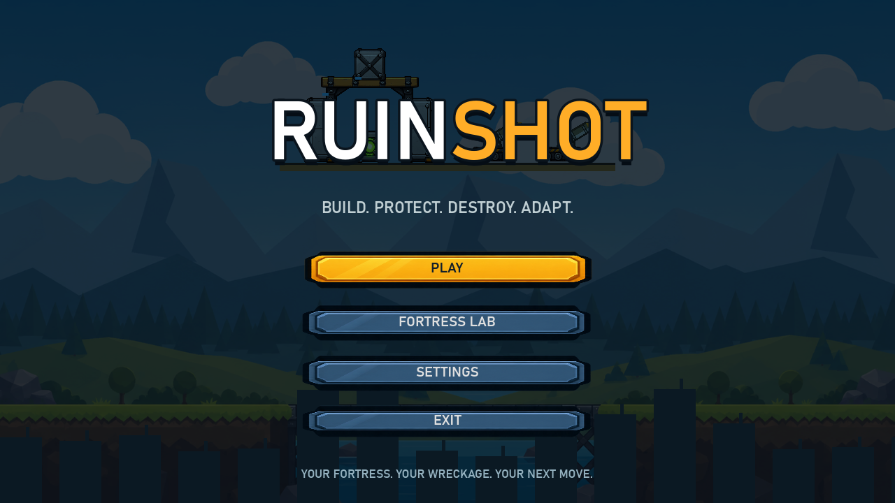
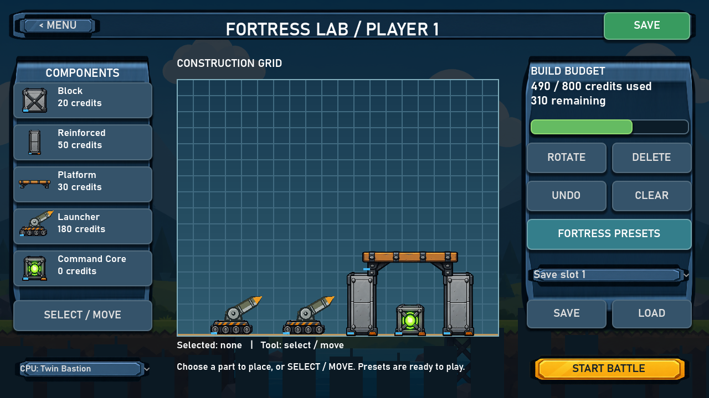
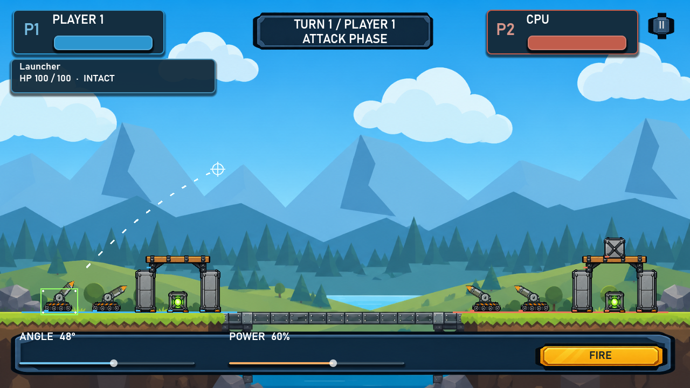
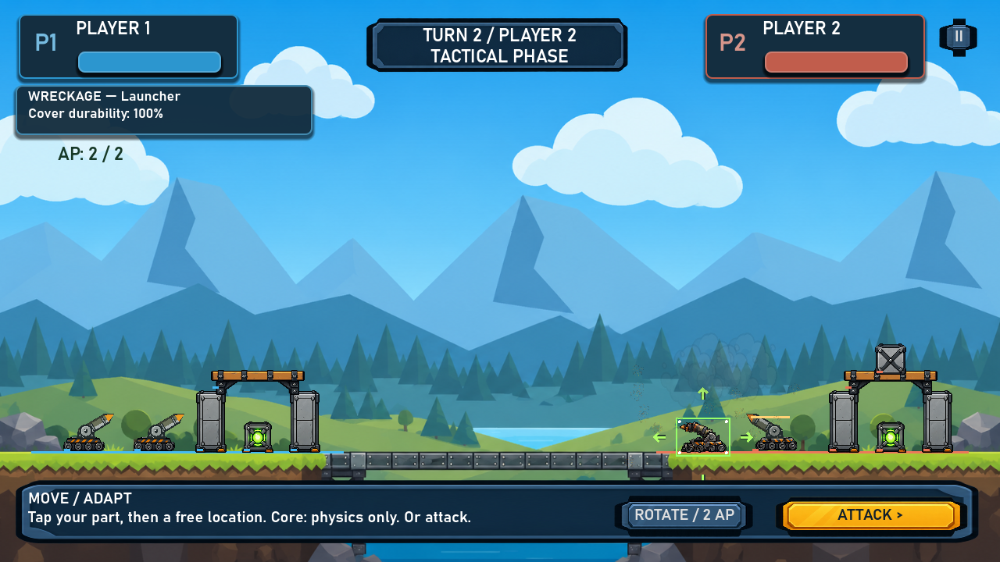
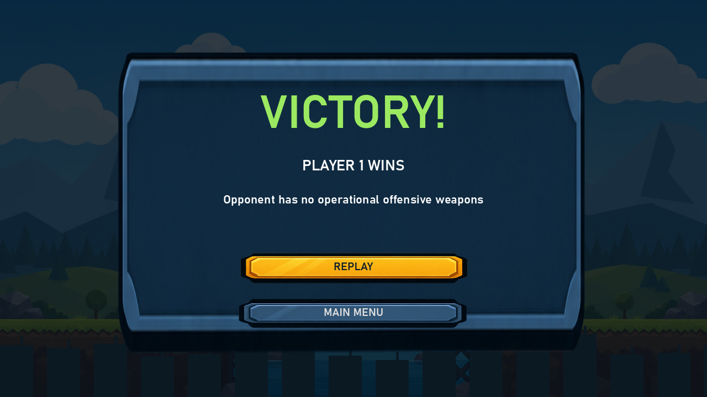

OFFICIAL PRESS KIT · IN DEVELOPMENT
RuinShot
A 2D turn-based physics battle game where players build modular fortresses, protect a Command Core, fire ballistic projectiles and turn wreckage into tactical cover.
Main artwork

Current development key image captured from the playable vertical slice.
Game facts
LuSor Games / DLF Technology
Android first
Physics / Artillery / Strategy
In development
Single player / Local 2 Player
Build · Protect · Aim · Fire · Destroy · Adapt
Short description
RuinShot is a mobile 2D turn-based artillery and fortress-building game. Players design a modular defense, protect their Command Core, exchange ballistic fire and reposition surviving parts or destroyed wreckage between shots.
Key features
- Modular fortress construction and saved designs
- Physics-based ballistic aiming and destruction
- Tactical Action Points between attacks
- Persistent wreckage that can become improvised cover
- Single-player CPU battles
- Local two-player pass-and-play
- Command Core and weapon-elimination victory conditions
Development screenshots










Development status
The playable vertical slice currently includes the Fortress Lab, modular parts, destructible structures, ballistic combat, Action Points, persistent wreckage, CPU and local two-player modes, pause/replay and both core victory conditions. Additional campaign content, weapons, audio and localization remain future work.